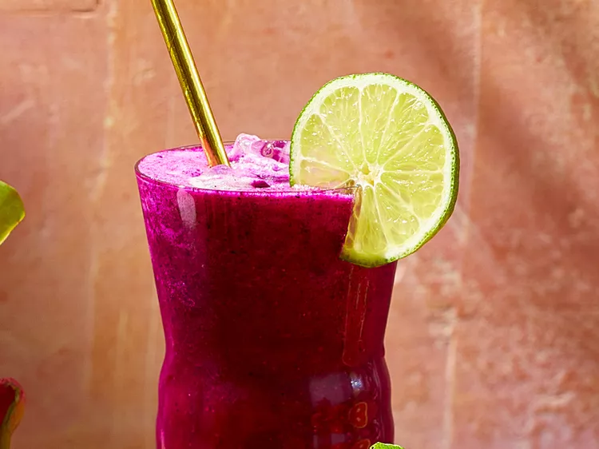

Agua Fresca de Pithaya (Dragon Fruit)

Description
Cool off with these hydrating sippers. Spanish for “fresh water,”
agua fresca is water flavored with fruit, vegetables, or seeds,
and sweetened with sugar.
Ingridients
- 2 lb pink- or white-flesh pithayas
- 1 1/2 cups water
- 1/4 cup lime juice
- 2 tablespoons sugar
- lime wheels, for garnish
- ice cubes as needed
Steps
-
Cut pithayas in half and scoop out flesh
-
Blend pithaya flesh, the water, lime juice,
and sugar in a blender until smooth
-
Pour over ice and garnish glasses with lime wheels